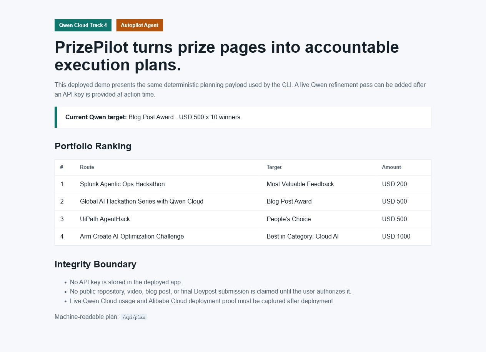

Fast Evidence Snapshot
Prize Decision Summary
This is the shortest version of the ask: PrizePilot should be considered for the Blog Post Award first, and Honorable Mention second, because the public story is a working example of an agent pursuing cash prizes while keeping Qwen usage, public proof, and human gates explicit. The Award Thesis Scorecard compresses that ranked thesis into one evidence-linked page.
| Prize Route | Why It Fits | Best Evidence | Honest Limit |
|---|---|---|---|
| Blog Post Award | The project story explains the product loop, evidence policy, Qwen integration, route scoring, and cloud deployment path as a readable build narrative. | Blog story, benchmark method, Qwen live proof, and this judge pack. | It does not claim that prize selection is statistically predictable or that a prize has already been won. |
| Top 10 Honorable Mention | The submission is complete, public, reproducible without login, and still improves before judging with a clear proof boundary. | Award evidence map, static plan JSON, repository tests, deck, and public demo. | Live Alibaba Cloud endpoint proof remains gated by account owner approval and cloud/billing boundaries. |
Qwen Contribution Depth
PrizePilot keeps route scoring deterministic and audit-friendly, then uses Qwen/DashScope as a refinement layer for the submitted Blog Post Award route. The completed live Qwen pass sharpened the public plan around the qualified Devpost prerequisite, USD 500 target, 10-winner structure, no stored credentials, no premature publishing, no assumed infrastructure, and eligibility-first constraints.
Open the Qwen Contribution Map for the stage-by-stage matrix and the Qwen Before/After Evidence for the deterministic-plan to refined-copy trail.
Judging Map
| Judging Signal | Public Evidence | Status |
|---|---|---|
| Decision method | The benchmark method documents sample routes, scoring signals, reproducible commands, and known limits. | Available without login and tied to src/prizepilot/agent.py. |
| Track 4 Autopilot Agent fit | The app ranks hackathon and bounty routes, produces execution plans, and exposes human approval gates instead of pretending all account actions are automated. | Public in repo, demo, and Devpost Story. |
| Qwen integration readiness | src/prizepilot/qwen_client.py supports DashScope and Qwen API keys at action time, with OpenAI-compatible chat-completions request tests, live smoke proof, and a contribution map. |
Code path, tests, one live Qwen/DashScope call, and stage-by-stage contribution evidence verified. |
| Alibaba Cloud deployment path | deploy/alibaba-cloud/s.yaml, the deployment runbook, and the endpoint checklist document the Function Compute custom-container path and exact public HTTP success signal. |
Prepared manifest and checklist; live endpoint not claimed. |
| Public proof and reproducibility | README quickstart, presentation deck, validation report, screenshots, demo GIF, public judge demo, static plan JSON, and live machine-readable /api/plan payload. |
Available without login. |
| Blog Post Award fit | The build journal explains the product loop, Qwen boundary, deployment plan, and evidence gaps honestly. | Published through GitHub Pages. |
Visual Proof

Local Verification Path
Judges can reproduce the non-account-gated evidence without secrets:
$env:PYTHONPATH='src'
python -m unittest discover -s tests -v
python -m prizepilot plan samples/qwen_hackathon.json
python -m prizepilot qwen-status
python -m prizepilot.webapp --host 127.0.0.1 --port 8000For a setup-free version of the same payload, open the static plan snapshot. Then open http://127.0.0.1:8000/api/plan after running the local server to inspect the live machine-readable plan and route ranking.
Account-Gated Proofs
| Proof | Why It Is Gated | Prepared Path |
|---|---|---|
| Future Qwen/DashScope reruns | One live smoke proof is captured. Any future rerun still requires an API key provided at action time. No API key is stored in the repo. | Qwen live proof, live proof gate, judge manifest, and Qwen live-check runbook |
| Live Alibaba Cloud endpoint | Requires official account, possible billing/credits, and deployment approval. | Alibaba endpoint checklist, live proof gate, and Alibaba deployment runbook |
| Prize payout | Any payout, tax, KYC, or bank step must stay on official claim channels with the account owner. | Route status and remaining gates, plus judge manifest do-not-infer boundaries |